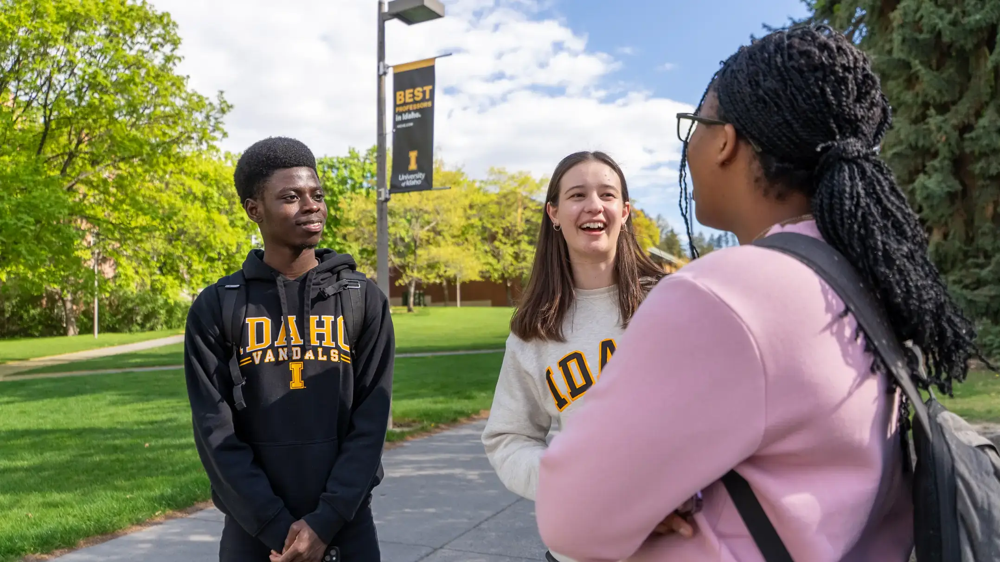

NOV04PROPOSED
RESEARCH OPPORTUNITIES
Curiosity meets opportunity.
Explore faculty connections, research experiences and how to get started.
Explore research resources →
YOUR NEXT CHAPTER STARTS HERE
From your first campus job to life after graduation.
Find the resources, people and opportunities to move forward.
Built for international students. Open to every Vandal.
Find your first opportunity, right here.
02 / ASK & DISCOVERTurn curiosity into experience.
03 / LEARN & APPLYBring your skills into the workplace.
04 / BUILD YOUR FUTURETake the next step in your career.
OPPORTUNITY STARTS WITH A CONNECTION
A good place to start. The right place to go next.
Explore tools and support for every stage of your journey.
Try a broader search or choose another career path.
Connect with IPO about employment eligibility, CPT and OPT before you begin work.
SMALL STEPS. REAL PROGRESS.
You don’t need to have it all figured out.
Start with one step, then build from there.
Your progress is saved in this browser.
LEARN TOGETHER. MOVE FORWARD.
Explore the planned Career Bridge panel series.
Dates are proposed; time and location will be announced.
RESEARCH OPPORTUNITIES
Explore faculty connections, research experiences and how to get started.
Explore research resources →INTERNSHIP OPPORTUNITIES
Get ready to discuss internship searches, résumés and lessons from student experiences.
Prepare with Career Services →FULL-TIME EMPLOYMENT
Explore networking, professional branding and the transition to work after graduation.
Find international student support →YOU HAVE A COMMUNITY BEHIND YOU